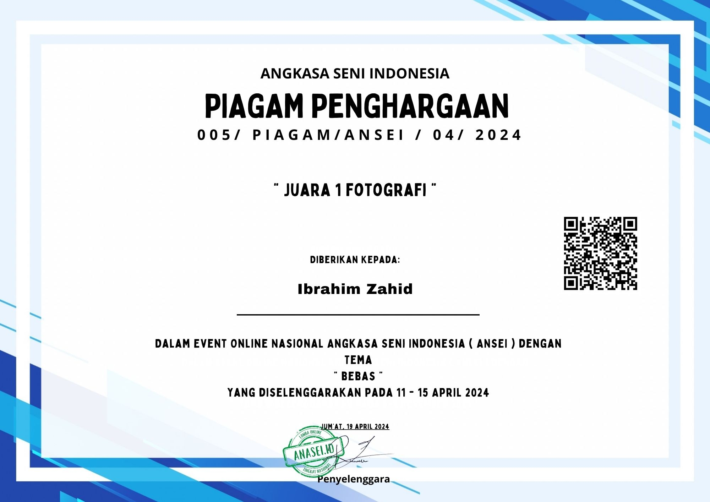
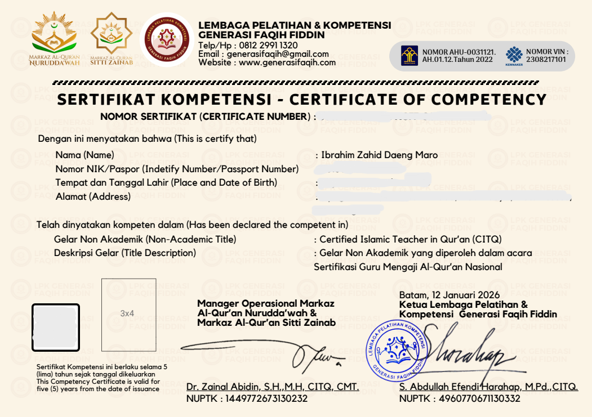

Saya adalah seorang mahasiswa asal flores yang saat ini berdomisili di Makassar. Saat ini saya sedang menempuh tantangan unik: kuliah paralel di dua kampus sekaligus, yaitu di Universitas Muhammadiyah Makassar mengambil jurusan Pendidikan Bahasa Arab dan di Universitas Insan Cita Indonesia mengambil jurusan Informatika. Saya sangat menikmati proses belajar di titik temu antara metode mengajar Bahasa arab dan perkembangan teknologi, sebuah kombinasi yang memberi saya perspektif luas dalam menciptakan metode belajar mengajar yang modern.
Di Universitas Muhammadiyah Makassar, kesibukan saya berpusat pada belajar Bahasa arab dan bagaimana cara mengajarkannya. Sementara di Universitas Insan Cita Indonesia, saya lebih banyak mengeksplorasi terkait teknologi baik itu dari perkembangan AI, mempelajari struktur di balik sebuah web, dan logic dalam pembuatan sebuah aplikasi. Menyeimbangkan dua dunia akademis ini melatih saya untuk menjadi pribadi yang sangat disiplin, adaptif, dan memiliki kemampuan manajemen waktu yang ketat
Di luar urusan jadwal kuliah yang padat dan tugas yang menumpuk, Anda biasanya bisa menemukan saya sedang berdiam diri di kos, memotret, atau sekadar bermain game demi menjaga kewarasan pikiran.
Saat ini saya sedang mengerjakan beberapa project yang berkaitan dengan jurusan saya. baik itu project yang berkaitan dengan Bahasa arab maupun Informatika.
- Project pertama yaitu pembuatan makalah untuk sekarang makalah tersebut masih dalam proses pembuatan. dan sedikit informasi bahwa makalah tersebut menggunakan bahasa arab.karena memang sesuai dengan jurusan saya yaitu pendidkan bahasa arab. jika ingin melihat makalah tersebut, mungkin bisa mengklik di sini
- Untuk project ke 2 adalah web yang saat ini sedang di akses atau web pribadi saya sendiri. sebenarnya saya sempat membuat beberapa project saat saya belajar mandiri atau otodidak namun file dari project itu telah hilang dan saya tidak memasukkan nya ke github.
Saya masih belum memiliki pengalaman di dunia kerja tapi ada beberapa kegiatan yang pernah saya ikuti. walaupun mungkin tidak sejalan dengan jurusan saya
-

Saya pernah memenangkan lomba fotografi yang di selenggarakan oleh akun instagram @ansei.id dan meraih peringkat 1 dalam kategori umum. sebenarnya saya hanya iseng mengikuti lomba tersebut dan tidak menyangka bisa meraih juara. pengalaman ini sangat menginspirasi saya untuk terus mengembangkan bakat dalam bidang fotografi.
-

Saya juga pernah mengikuti seminar yang di selenggarakan oleh akun instagram @sertifikasi_gma_nasional dan mendapatkan gelar non akademik, gelar tersebut berlaku selama 5 tahun semenjak saftifikat itu diterbitkan. saya mengikuti itu karena bisa menunjang karir saya dalam bidang bahasa arab atau sebagai guru jika suatu saat saya mengajar.